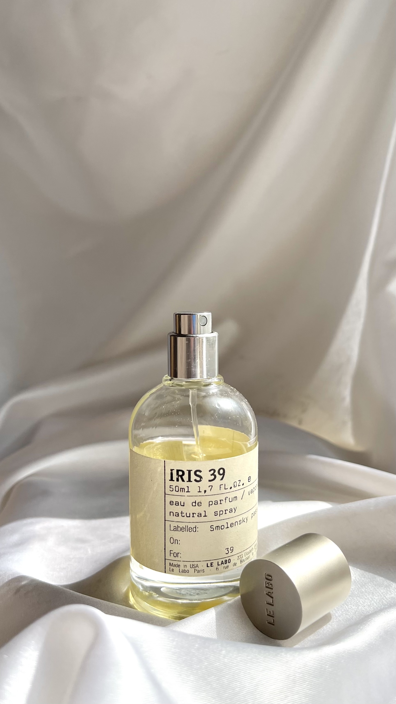

|  | |||||||||||||||
|---|---|---|---|---|---|---|---|---|---|---|---|---|---|---|---|
Le Labo Iris 39 |
|||||||||||||||
|
Це аромат для чоловіків та жінок, належить до групи шипрові квіткові. Iris 39 створений в 2006 році. Парфумована вода Iris 39 від Le Labo робить ставку на ексклюзивність та унікальність як у виготовленні аромату, так і його оформленні. Класичний стиль флакона з лаконічною етикеткою став візитною карткою бренду, що наголошує на важливості змісту. Гармонійно об'єднавши 39 компонентів на чолі із дорогоцінним екстрактом ірису, парфумер Франк Фельклем створив витончену симфонію у 2006 році. Ніжність квіткових відтінків плавно розлітається по композиції, розповідаючи історію романтичності і легкості натури. Починаючи з букету, мірно набувають чинності шипрові акорди, відтіняючи могутність і силу. Універсальний аромат Парфюмер: Frank Voelkl. |
|||||||||||||||
| |||||||||||||||